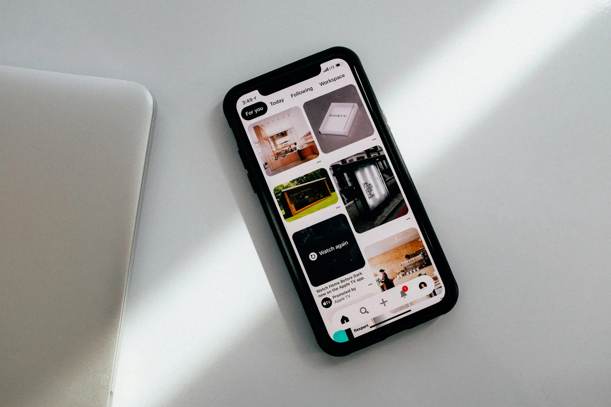
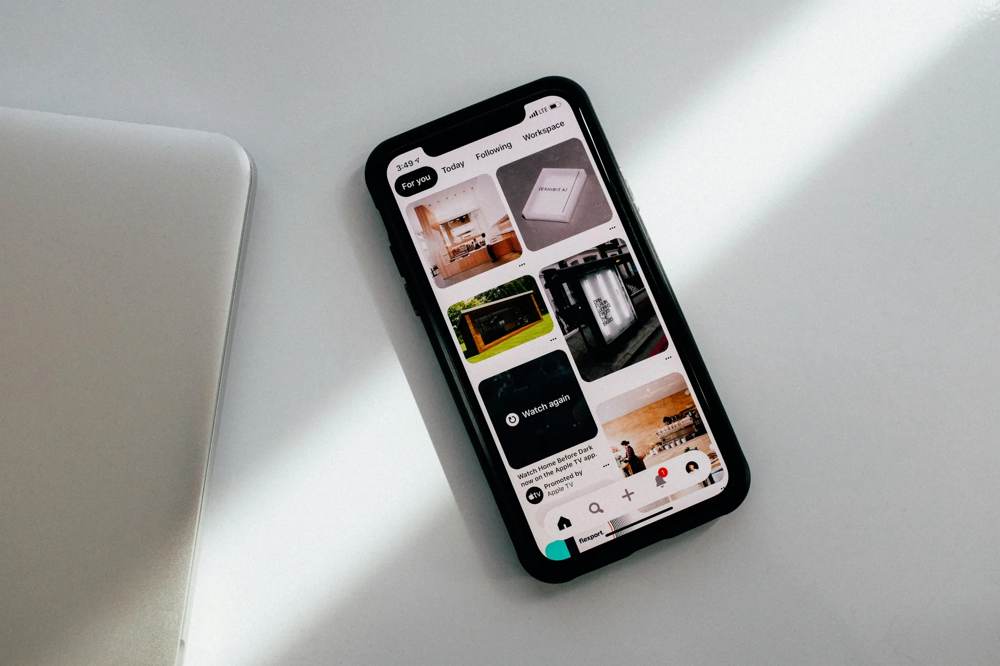

2017 — Now
Senior Designer at Magic Design Co
San Francisco, CA

I’m a passionate UX designer striving to create intuitive and engaging experiences. I’m a big believer that things can always be simpler than we think.
2017 — Now
Senior Designer at Magic Design Co
San Francisco, CA
2015 — 2017
Junior Designer at Creative Co
Atlanta, GA
 


2014 — 2015
Intern at Design Hub
Atlanta, GA
2012 — 2014
Freelance Graphic Designer
Remote
2010 — 2012
Art Assistant at Studio X
Cincinnati, OH
2008 — 2010
Volunteer Designer at Nonprofit Y
Cincinnati, OH
2023
Exploring the Intersection of Design and Technology
Collaboration with Mia, Leo, and Ava

This is a site title that can go...
1 min read
2023
Understanding Design Hierarchies
Worked alongside Alex
2020
The Art of User-Centered Desgin
2019
Navigating Design Challenges
2018
Crafting Engaging User Experiences
2018
Bulding a Cohesive Design Language
2017
The Power of Visual Storytelling
2024
Designing for Accessibility
Los Angeles, CA
2024
How to make things super simple
Miami, FL
2023
Designing your career
2021
Nature walks
2020
Plant-based cookware
2019
Interactive art installation
2010 - 2010
Master's in Interaction Design at Georgia Tech
Atlanta, GA
2006 - 2010
Bachelor's in Communication Design at University of Cincinnati
Cincinnati, OH